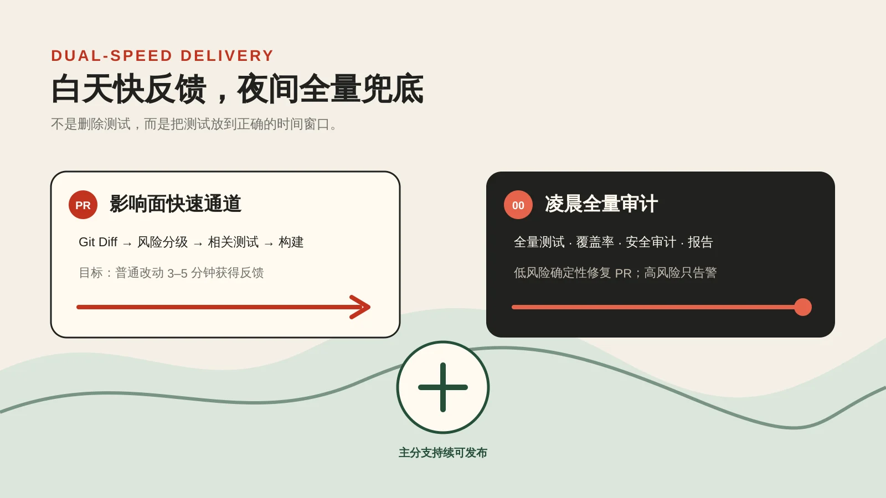
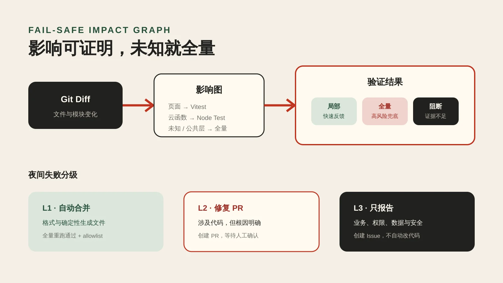

L1 · 自动合并
仅限格式和确定性生成文件；必须全量重跑通过，并受分支保护约束。
日常 PR 只验证可证明的影响面；每天凌晨零点用全量测试、覆盖率和安全审计兜底。速度与质量不再互相挤占。

旧流程在每个 PR 上顺序安装所有云函数依赖，随后重复执行全量测试、覆盖率和安全审计。它适合发布前总验收，却让文档、小范围页面和单云函数变更也承担同样成本。
validate 内测试重叠。Nx 的 affected 模型会依据基线与当前提交计算受影响项目，再执行这些项目及其依赖任务；Vitest 的 related 命令则从源码静态导入图找到关联测试。[2][3]
此里不引入新的大型构建框架，而是在现有目录和测试体系上实现轻量影响图：Pages、设计契约、脚本、云函数和小程序源码分别映射到已有测试命令。

| 变更范围 | PR 验证 | 升级条件 |
|---|---|---|
| Pages / 文档 | 格式、Pages 契约、设计/UI sync、构建 | 触及工作流或全局配置 |
| 小程序页面与组件 | Vitest related、显式测试、发布日志、包体和构建 | 公共 Repository、路由、全局主题 |
| 单云函数 | prepare、对应函数安装与 Node Test、部署包校验 | cloudfunctions/shared 或跨函数契约 |
| 脚本与治理 | 同名 Node Test + 对应设计/部署/基础设施门禁 | 选择器自身、CI 和部署工作流 |
| 依赖、锁文件、未知路径 | 直接全量：validate + coverage + audit | |
GitHub 官方 setup-node 可以按多个 lockfile 建立 npm 下载缓存，因此仍使用确定性的 npm ci，但避免重复下载相同依赖。[4]
GitHub 定时工作流按 UTC 运行并使用默认分支最新提交；北京时间 00:00 对应 0 16 * * *，同时保留人工触发入口用于复跑。[1]
三个阶段独立记录结果，即使前一阶段失败也继续收集后续信号；最终报告作为 Artifact 保存 30 天，方便判断是单点失败还是系统性退化。
仅限格式和确定性生成文件；必须全量重跑通过，并受分支保护约束。
涉及代码但根因明确时创建 PR，保留人工确认，不自动合并。
业务逻辑、数据、权限、安全和依赖升级只创建 Issue，不自动改代码。
当前第一阶段只开放最窄的 L1：运行格式化后若没有差异，则创建去重 Issue；若产生差异，只有 docs/ 下的 Markdown、HTML、CSS、JSON，以及根目录 README、CONTRIBUTING、DESIGN 文档才允许申请自动合并。工作流、依赖、业务代码和其他配置即使只是格式变化也必须人工确认。自动合并还要求仓库配置受限的 NIGHTLY_PR_TOKEN，确保机器人 PR 能触发正常 CI；未配置时只创建 PR，不自动合并。GitHub CLI 提供标准 PR 创建能力，机器人权限同时收敛为内容、PR、Issue 和 Actions 读取。[5]
| 验收维度 | 通过信号 |
|---|---|
| 选择正确 | 纯文档、页面、单云函数、脚本、高风险和未知路径都有自动测试锁定。 |
| Fail-safe | 选择器自身、工作流、共享层、依赖和 30 个以上文件变更自动全量。 |
| 主分支安全 | main push 仍执行完整 validate、coverage 与 audit。 |
| 夜间可追溯 | 报告包含提交、运行链接和三个阶段结果，失败任务最终保持红色。 |
| 不会自旋 | 固定 concurrency、唯一夜间分支、同标题 Issue 去重、Bot 分支识别。 |
| 发布正确 | Pages 正式 URL 可访问；CI、CodeQL 与范围化部署工作流成功。 |